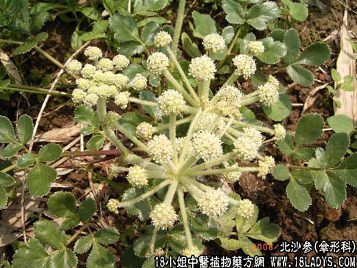

【中药概述】
北沙参为伞科多年生草本植物珊瑚菜的根。甘、苦，微寒。入肺、胃经。
1．养阴清肺：用于阴虚火旺、咳嗽少痰、骨蒸劳热或病后阴耗津亏之口燥咽干者，阴虚肺燥或热伤肺阴、咽喉干燥等。
2．生津益胃：用于温病热伤胃阴或久病阴虚津亏的口干咽燥、舌红，大便干结等。
【药效鉴别】
本品平补正气，养胃阴，兼可清肺胃之热。“偏于虚证”。作用较强于南沙参。
【药理作用】
1.能刺激支气管粘膜，使分泌物增多，而有祛痰作用；
2.具有解热作用。
【化学成分】
北沙参含生物碱及淀粉。
【用量用法】
10——15g，水煎服。
【使用注意】
肺寒痰湿咳嗽忌用。本品反藜芦。
【注注注注】
北沙参呈条状，细长。表面淡黄色，粗糙，全体有细纵皱纹或纵沟，并有棕黄色或白色点状皮孔和须根痕。质坚硬而脆，断面皮部浅黄白色，木部黄色。